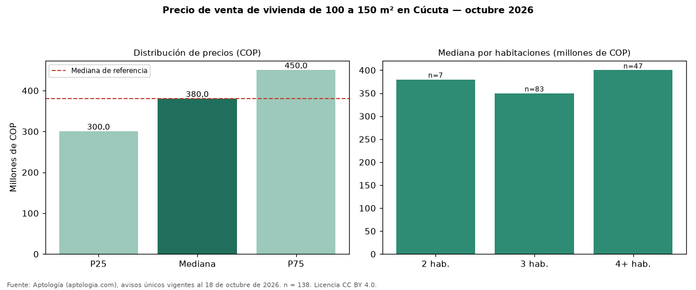

Precio de venta de vivienda de 100 a 150 m² en Cúcuta — octubre 2026
Con 138 avisos únicos, el precio mediano de vivienda de 100 a 150 m² en venta en Cúcuta es COP 380 millones. Es prácticamente la misma mediana de toda la oferta de venta en Cúcuta (COP 380 millones). Por metro cuadrado, la mediana es COP 3.030.462/m² (+4 % frente a COP 2.925.974/m²). Por habitaciones: 2 habitaciones, COP 380 millones (n = 7); 3 habitaciones, COP 350 millones (n = 83); 4 o más habitaciones, COP 400 millones (n = 47). El estrato más frecuente es 4. El 89 % de los avisos tiene al menos un parqueadero. El rango intercuartílico va de COP 300 millones a COP 450 millones (razón 1,5). Datos abiertos CC BY 4.0 de Aptología; fuente y búsqueda de inmuebles: https://www.aptologia.com/venta/cucuta. Archivos: PDF de 2 páginas, CSV con las cifras y gráfica PNG.

| Avisos únicos | 138 |
|---|---|
| Percentil 25 | COP 300.000.000 |
| Mediana | COP 380.000.000 |
| Percentil 75 | COP 450.000.000 |
| Mediana por m² | COP 3.030.462 |
Fuente: avisos vigentes de portales inmobiliarios recopilados por Aptología, deduplicados (mínimo 30 avisos únicos por celda). Precios pedidos, no cerrados. Fecha: 2026-10-18.